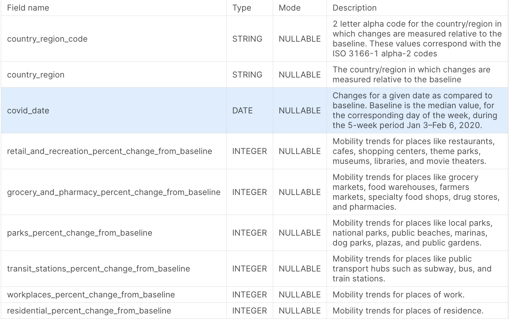
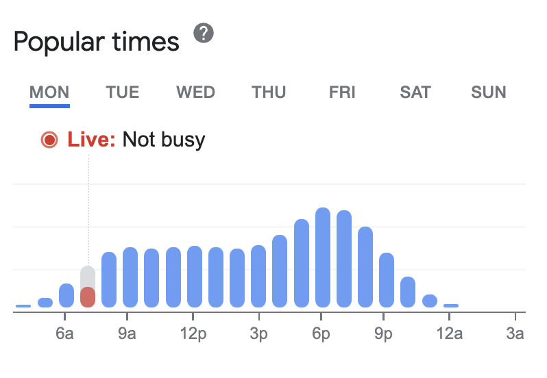

Google Mobility Reports and Popular Times API#
Google Mobility Reports is intended to help understand the impact of COVID-19 on movement and visits to different types of places, such as grocery stores, parks, workplaces, etc. It’s not intended for medical diagnostic, prognostic, or treatment purposes, nor for personal travel plans. The data should not be used to compare changes between countries, or between regions with different characteristics (like rural vs urban areas) as location accuracy varies. Google has discontinued these reports from 15th Oct 2022.
Data Categories:
The dataset provides mobility trends for the following categories:
Grocery & Pharmacy: Mobility trends for places like grocery markets, food warehouses, specialty food shops, drug stores, and pharmacies.
Parks: Mobility trends for places like local parks, national parks, public beaches, marinas, dog parks, plazas, and public gardens.
Transit Stations: Mobility trends for public transport hubs such as subway, bus, and train stations.
Retail & Recreation: Mobility trends for places like restaurants, cafes, shopping centers, theme parks, museums, libraries, and movie theaters.
Residential: Mobility trends for places of residence.
Workplaces: Mobility trends for places of work.
Data Collection and Privacy:
The datasets are calculated using aggregated and anonymized data from users who have opted-in to Location History for their Google Account. This data represents a sample of Google’s users and may or may not represent the exact behavior of a wider population.
Google is committed to preserving user privacy. No personally identifiable information, like an individual’s location, contacts, or movement, is made available at any point. Users can choose to turn off Location History at any time from their Google Account and can always delete Location History data directly from their Timeline.
How can one Intrepret and Analyse this data
Hypothetical Situation
Impact of Holidays: Use a Google Mobility Report from Diwali or another major holiday. Compare this to a regular day, emphasizing the difference in mobility patterns. For instance, if the “Workplaces” category shows a decrease of 50% on Diwali compared to the baseline day, it indicates fewer people went to their workplaces on Diwali. Simultaneously, if the “Residential” category shows an increase, it signifies more people stayed at home.
Small Changes in Residential Data: Use data from the “Residential” category during the initial COVID-19 lockdown period. Even a 10% increase in this category can signify a significant change in behavior, indicating that people were spending more time at home, in line with lockdown regulations.
Weekend Patterns: Show a report that clearly demonstrates changes from weekdays to weekends. For instance, you might show that visits to workplaces in Delhi drop by 20% on weekends compared to weekdays, while visits to parks increase by 30%. This shows how people’s routines change on weekends.
Sample Covid Mobility Report Data

Lets Take the data for Delhi’s district - Central Delhi, India, from May 15 2021 to August 10 2022
import pandas as pd
data = pd.read_csv(r'../offline/data/data.csv')
data
| country_region_code | country_region | sub_region_1 | sub_region_2 | metro_area | iso_3166_2_code | census_fips_code | place_id | date | retail_and_recreation_percent_change_from_baseline | grocery_and_pharmacy_percent_change_from_baseline | parks_percent_change_from_baseline | transit_stations_percent_change_from_baseline | workplaces_percent_change_from_baseline | residential_percent_change_from_baseline | source_url | etl_timestamp | |
|---|---|---|---|---|---|---|---|---|---|---|---|---|---|---|---|---|---|
| 0 | IN | India | Delhi | Central Delhi | NaN | NaN | NaN | ChIJiT9nOFj9DDkRkoyq8FS5wxo | 2021-05-15 | -83 | -69 | -81 | -80 | -68 | 23 | https://www.gstatic.com/covid19/mobility/Globa... | 2023-07-10 00:07:58.145154+00:00 |
| 1 | IN | India | Delhi | Central Delhi | NaN | NaN | NaN | ChIJiT9nOFj9DDkRkoyq8FS5wxo | 2021-05-16 | -84 | -68 | -81 | -77 | -54 | 18 | https://www.gstatic.com/covid19/mobility/Globa... | 2023-07-10 00:07:58.145154+00:00 |
| 2 | IN | India | Delhi | Central Delhi | NaN | NaN | NaN | ChIJiT9nOFj9DDkRkoyq8FS5wxo | 2021-05-17 | -80 | -64 | -76 | -79 | -67 | 23 | https://www.gstatic.com/covid19/mobility/Globa... | 2023-07-10 00:07:58.145154+00:00 |
| 3 | IN | India | Delhi | Central Delhi | NaN | NaN | NaN | ChIJiT9nOFj9DDkRkoyq8FS5wxo | 2021-05-18 | -82 | -66 | -79 | -78 | -70 | 24 | https://www.gstatic.com/covid19/mobility/Globa... | 2023-07-10 00:07:58.145154+00:00 |
| 4 | IN | India | Delhi | Central Delhi | NaN | NaN | NaN | ChIJiT9nOFj9DDkRkoyq8FS5wxo | 2021-05-19 | -87 | -79 | -84 | -81 | -72 | 27 | https://www.gstatic.com/covid19/mobility/Globa... | 2023-07-10 00:07:58.145154+00:00 |
| ... | ... | ... | ... | ... | ... | ... | ... | ... | ... | ... | ... | ... | ... | ... | ... | ... | ... |
| 448 | IN | India | Delhi | Central Delhi | NaN | NaN | NaN | ChIJiT9nOFj9DDkRkoyq8FS5wxo | 2022-08-06 | -24 | 9 | 23 | 7 | 3 | 5 | https://www.gstatic.com/covid19/mobility/Globa... | 2023-07-10 00:07:58.145154+00:00 |
| 449 | IN | India | Delhi | Central Delhi | NaN | NaN | NaN | ChIJiT9nOFj9DDkRkoyq8FS5wxo | 2022-08-07 | -29 | 12 | 14 | 8 | 4 | 5 | https://www.gstatic.com/covid19/mobility/Globa... | 2023-07-10 00:07:58.145154+00:00 |
| 450 | IN | India | Delhi | Central Delhi | NaN | NaN | NaN | ChIJiT9nOFj9DDkRkoyq8FS5wxo | 2022-08-08 | -24 | 5 | 48 | 6 | -4 | 5 | https://www.gstatic.com/covid19/mobility/Globa... | 2023-07-10 00:07:58.145154+00:00 |
| 451 | IN | India | Delhi | Central Delhi | NaN | NaN | NaN | ChIJiT9nOFj9DDkRkoyq8FS5wxo | 2022-08-09 | -23 | 8 | 25 | 2 | -23 | 9 | https://www.gstatic.com/covid19/mobility/Globa... | 2023-07-10 00:07:58.145154+00:00 |
| 452 | IN | India | Delhi | Central Delhi | NaN | NaN | NaN | ChIJiT9nOFj9DDkRkoyq8FS5wxo | 2022-08-10 | -18 | 12 | 56 | 28 | -3 | 3 | https://www.gstatic.com/covid19/mobility/Globa... | 2023-07-10 00:07:58.145154+00:00 |
453 rows × 17 columns
import matplotlib.pyplot as plt
# List of categories
categories = ["retail_and_recreation_percent_change_from_baseline",
"grocery_and_pharmacy_percent_change_from_baseline",
"parks_percent_change_from_baseline",
"transit_stations_percent_change_from_baseline",
"workplaces_percent_change_from_baseline",
"residential_percent_change_from_baseline"]
# Plot each category
for category in categories:
plt.figure(figsize=(10, 5))
plt.plot(data['date'], data[category])
plt.title(category)
plt.xlabel('Date')
plt.ylabel('Percent change from baseline')
plt.xticks(rotation=45)
plt.tight_layout()
plt.show()
The visualizations show the daily percent change from baseline for different categories in Central Delhi from May 15 2021 to August 10 2022. Here are some observations from these plots:
Retail and Recreation: There is a clear downward trend, indicating a consistent decrease in visits to retail and recreation places during this period.
Grocery and Pharmacy: The trend is slightly downward, indicating a small decrease in visits to grocery and pharmacy places.
Parks: The downward trend indicates a decrease in visits to parks during this period.
Transit Stations: There is a clear downward trend, indicating a decrease in visits to transit stations during this period.
Workplaces: The downward trend suggests a decrease in visits to workplaces during this period.
Residential: There is an upward trend, indicating an increase in time spent at residences, which is consistent with the decrease in visits to other types of places.
These trends are consistent with the measures taken to mitigate the spread of COVID-19, such as lockdowns and social distancing guidelines, which encouraged people to stay home and avoid public places. These visualizations provide a clear picture of how these measures affected mobility in different sectors in Central Delhi during this period.
# Plotting
import warnings
warnings.filterwarnings("ignore")
mean_changes = data.mean()
plt.figure(figsize=(12, 8))
mean_changes.plot(kind='barh', color='skyblue')
plt.xlabel('Percent change from baseline')
plt.ylabel('Category')
plt.title('Average percent change from baseline for each category')
plt.show()
The categories are sorted from the highest positive change (Residential) to the most negative change (Retail and Recreation).
From the bar chart, it is evident that:
The residential category shows a positive change, indicating people spent more time at home. All other categories (Retail & Recreation, Grocery & Pharmacy, Parks, Transit Stations, and Workplaces) show a negative change, indicating a decrease in mobility in these sectors.
Similarily you can analyze and compare different countries states , regions , sub regions and understand how mobility has picked up
Google Popular Times API#
Google Popular Times is a feature of Google Search and Google Maps. It provides users with information indicating when a particular location (like a restaurant, a museum, or a grocery store) typically gets busy. The data is presented as a histogram, with the horizontal axis representing the time of day and the vertical axis representing how busy the location typically is at that time.
Here’s how it works:
Data Collection: Google collects data from users who have opted into Google Location History. It aggregates and anonymizes this data.
Data Analysis: Google analyzes this data to identify patterns. For example, it might identify that a particular grocery store gets busier during the evening.
Displaying Data: Google then displays this information as a graph. The graph shows the relative popularity of the place for each hour of the day, with each day of the week having a separate graph.
This feature can be very useful for planning visits to avoid busy times, reducing waiting times, and even helping with social distancing during the COVID-19 pandemic. However, it’s important to note that the data is based on typical patterns and may not always reflect the current situation, especially in times of rapid change or unusual circumstances.

Google’s Popular Times feature can provide journalists with valuable information about the behavior and habits of people in a specific location. Here are some potential ways journalists could use this tool:
Reporting on Consumer Trends: Journalists could use Popular Times to report on consumer trends. For example, they could investigate whether certain types of businesses (like gyms or coffee shops) are more popular at certain times of day.
Investigating Impact of Events: If a major event occurs (like a concert or a sports game), journalists could use Popular Times to investigate its impact on local businesses.
Analyzing Impact of Policy Changes: If a new policy or regulation is implemented (such as a change in operating hours for alcohol sales), journalists could use Popular Times to investigate its impact on businesses and consumer behavior.
Social Distancing Measures: During a pandemic, journalists could use Popular Times to report on how well people are adhering to social distancing measures. For example, they could identify locations that are consistently crowded, potentially posing a risk for virus transmission.
Urban Planning and Development: Journalists could use Popular Times data to inform stories about urban planning and development. For example, if a city is planning to redevelop a neighborhood, journalists could use Popular Times to report on how people currently use the space and how this might change after redevelopment.
Note
Google’s Popular Times data is based on averages and might not always reflect the current situation. Therefore, it should be used as one tool among many, and findings should be cross-referenced with other sources of information.
We will use populartimes data from 13-24 May 2020 of Delhi using certain Point of interest like bank,petrolpump,hypermarket & vegetable market to understand how one can analyse and interpret
# Import the required library
import pandas as pd
# Load the new data file
popular_times_data = pd.read_csv(r'../offline/data/Delhi_Popular_Time.csv')
# Display the first few rows of the data
popular_times_data.head()
| id | name | address | current_popularity | alltime_popularity | day | hour | category | date | city | |
|---|---|---|---|---|---|---|---|---|---|---|
| 0 | ChIJpamq2rbjDDkRI3MWeR5A2Qk | Subzi Mandi | A- 32, Kalka Devi Marg, Block A, Dayanand Colo... | 17.0 | 8 | Wednesday | 7 | Vegetable Market | 2020-05-13 | Delhi |
| 1 | ChIJZbGXPJT8DDkROGQnBrxZGes | Jheel Sabzi Mandi | Jheel, Geeta Colony, Shahdara, Delhi, 110031, ... | 9.0 | 2 | Wednesday | 7 | Vegetable Market | 2020-05-13 | Delhi |
| 2 | ChIJaQyjiKIEDTkRl1Ofx_r36SQ | Choti Subzi Mandi | Mandir Marg, Chhoti Subji Mandi, Janakpuri, Ne... | 6.0 | 4 | Wednesday | 7 | Vegetable Market | 2020-05-13 | Delhi |
| 3 | ChIJAQAA0IoBDTkR2FykSyQcvFY | Azadpur Mandi | Azadpur new sabji mandi Shop no. A324, Block A... | 73.0 | 56 | Wednesday | 7 | Vegetable Market | 2020-05-13 | Delhi |
| 4 | ChIJv81bQJnhDDkRtWevGSD5IOs | Devli Vegetable Market | Durbal Ji Nath Marg, RPS Colony, Khanpur, New ... | No Footfall | 0 | Wednesday | 7 | Vegetable Market | 2020-05-13 | Delhi |
The loaded dataset contains information about various places in Delhi. Here’s a brief description of each column in the dataset:
id: Unique identifier for each place.
name: Name of the place.
address: Address of the place.
current_popularity: The current popularity of the place as a percentage. Some places have “No Footfall” which means there’s no data available for the current popularity.
alltime_popularity: The all-time popularity of the place as a percentage.
day: The day of the week when the data was recorded.
hour: The hour of the day when the data was recorded.
category: The category of the place (e.g., Vegetable Market).
date: The date when the data was recorded.
city: The city where the place is located.
# Exclude places where current popularity is "No Footfall"
popular_times_data_filtered = popular_times_data[popular_times_data['current_popularity'] != 'No Footfall']
# Convert the 'current_popularity' column to numeric
popular_times_data_filtered['current_popularity'] = pd.to_numeric(popular_times_data_filtered['current_popularity'])
# Import the necessary visualization libraries
import matplotlib.pyplot as plt
import seaborn as sns
# Plot the distribution of current popularity for different categories of places
plt.figure(figsize=(12, 8))
sns.boxplot(x='current_popularity', y='category', data=popular_times_data_filtered, palette='viridis')
plt.title('Distribution of Current Popularity for Different Categories of Places')
plt.xlabel('Current Popularity')
plt.ylabel('Category')
plt.show()
This boxplot provides a visual representation of the distribution of current popularity for different categories of places in Delhi. Here’s how to interpret it:
Vegetable Market: Most vegetable markets have a current popularity ranging roughly from 30 to 70, with some outliers experiencing higher popularity. The median popularity is around 50.
Residential Area: The current popularity for most residential areas ranges from about 10 to 60, with a median around 30.
Public Transport: Public transports have a wider range of popularity, extending from near 0 to almost 100. The median popularity is around 45.
Park: Parks have a current popularity mostly between 20 and 80, with a median near 50.
Covid Centre: Covid Centres have a current popularity mostly between 20 and 70, with a median just above 40. There are a few outliers with higher popularity.
Grocery Store: The current popularity of grocery stores ranges roughly from 20 to 70, with a median around 45.
This plot provides a comprehensive picture of how busy different types of places are in the current situation. It can be a useful tool for a journalist to report on how the public is interacting with different types of places in the city, which can be particularly relevant in situations like a pandemic.
# Let's examine the alltime_popularity of different categories of places
# Convert the 'alltime_popularity' column to numeric
popular_times_data_filtered['alltime_popularity'] = pd.to_numeric(popular_times_data_filtered['alltime_popularity'])
# Plot the distribution of alltime popularity for different categories of places
plt.figure(figsize=(12, 8))
sns.boxplot(x='alltime_popularity', y='category', data=popular_times_data_filtered, palette='viridis')
plt.title('Distribution of All-time Popularity for Different Categories of Places')
plt.xlabel('All-time Popularity')
plt.ylabel('Category')
plt.show()
This boxplot shows the distribution of all-time popularity for different categories of places in Delhi. Here's how to interpret it:
Vegetable Market: The all-time popularity for most vegetable markets ranges roughly from 30 to 70, with a median popularity around 50.
Residential Area: The all-time popularity for most residential areas ranges from about 20 to 60, with a median around 40.
Public Transport: Public transports have a wide range of popularity, extending from near 10 to almost 100. The median popularity is around 50.
Park: Parks have an all-time popularity mostly between 30 and 80, with a median near 50.
Covid Centre: Covid Centres have an all-time popularity mostly between 20 and 60, with a median just above 40. There are a few outliers with higher popularity.
Grocery Store: The all-time popularity of grocery stores ranges roughly from 30 to 70, with a median around 50.
By comparing this plot with the previous one, we can see how the current popularity of these places compares with their all-time popularity. This can help identify places that are currently more or less popular than usual.
Next, let’s analyze the hourly pattern of current popularity for different categories of places.
# Convert the 'hour' column to numeric
popular_times_data_filtered['hour'] = pd.to_numeric(popular_times_data_filtered['hour'])
# Group the data by 'category' and 'hour', and calculate the mean current popularity
hourly_popularity = popular_times_data_filtered.groupby(['category', 'hour'])['current_popularity'].mean().reset_index()
# Pivot the data for easier plotting
hourly_popularity_pivot = hourly_popularity.pivot(index='hour', columns='category', values='current_popularity')
# Plot the hourly pattern of current popularity for different categories of places
plt.figure(figsize=(12, 8))
sns.lineplot(data=hourly_popularity_pivot, dashes=False)
plt.title('Hourly Pattern of Current Popularity for Different Categories of Places')
plt.xlabel('Hour')
plt.ylabel('Current Popularity')
plt.show()
This line chart shows the hourly pattern of current popularity for different categories of places in Delhi. Here's how to interpret it:
Vegetable Market: The popularity of vegetable markets peaks in the early morning hours, then gradually decreases throughout the day.
Residential Area: The popularity of residential areas is relatively constant throughout the day, with a slight increase in the late evening hours.
Public Transport: The popularity of public transport peaks in the morning and late afternoon hours, corresponding to typical commuting times.
Park: The popularity of parks increases during the afternoon hours, peaking in the late afternoon.
Covid Centre: The popularity of Covid Centres is relatively constant throughout the day, with a slight peak in the early morning hours.
Grocery Store: The popularity of grocery stores peaks in the early morning hours, then gradually decreases throughout the day.
This chart can help journalists understand when different types of places are busiest, which can inform reporting on topics like commuting patterns or the impact of Covid-19 on people’s daily routines.
Next, let’s analyze how the current popularity of different categories of places varies by day of the week.
Finished working Show work
This line chart shows the daily pattern of current popularity for different categories of places in Delhi. Here’s how to interpret it:
Vegetable Market: The popularity of vegetable markets is relatively constant throughout the week, with a slight decrease on Sundays.
Residential Area: The popularity of residential areas is highest on Sundays, and lowest on Fridays and Saturdays.
Public Transport: The popularity of public transport is highest on weekdays, with a significant drop on weekends.
Park: The popularity of parks increases from Monday to Sunday, peaking on Sunday.
Covid Centre: The popularity of Covid Centres is relatively constant throughout the week, with a slight decrease on Sundays.
Grocery Store: The popularity of grocery stores is highest on Sundays, and lowest on Fridays.
This chart provides a detailed view of how the popularity of different types of places varies by day of the week. This information can be particularly useful for journalists covering topics like shopping trends, commuting patterns, or the impact of Covid-19 on daily life in Delhi.
# Convert the 'day' column to a category type with proper order
day_order = ['Monday', 'Tuesday', 'Wednesday', 'Thursday', 'Friday', 'Saturday', 'Sunday']
popular_times_data_filtered['day'] = pd.Categorical(popular_times_data_filtered['day'], categories=day_order, ordered=True)
# Group the data by 'category' and 'day', and calculate the mean current popularity
daily_popularity = popular_times_data_filtered.groupby(['category', 'day'])['current_popularity'].mean().reset_index()
# Pivot the data for easier plotting
daily_popularity_pivot = daily_popularity.pivot(index='day', columns='category', values='current_popularity')
# Plot the daily pattern of current popularity for different categories of places
plt.figure(figsize=(12, 8))
sns.lineplot(data=daily_popularity_pivot, dashes=False)
plt.title('Daily Pattern of Current Popularity for Different Categories of Places')
plt.xlabel('Day')
plt.ylabel('Current Popularity')
plt.show()
This line chart shows the daily pattern of current popularity for different categories of places in Delhi. Here’s how to interpret it:
Vegetable Market: The popularity of vegetable markets is relatively constant throughout the week, with a slight decrease on Sundays.
Residential Area: The popularity of residential areas is highest on Sundays, and lowest on Fridays and Saturdays.
Public Transport: The popularity of public transport is highest on weekdays, with a significant drop on weekends.
Park: The popularity of parks increases from Monday to Sunday, peaking on Sunday.
Covid Centre: The popularity of Covid Centres is relatively constant throughout the week, with a slight decrease on Sundays.
Grocery Store: The popularity of grocery stores is highest on Sundays, and lowest on Fridays.
This chart provides a detailed view of how the popularity of different types of places varies by day of the week. This information can be particularly useful for journalists covering topics like shopping trends, commuting patterns, or the impact of Covid-19 on daily life in Delhi.